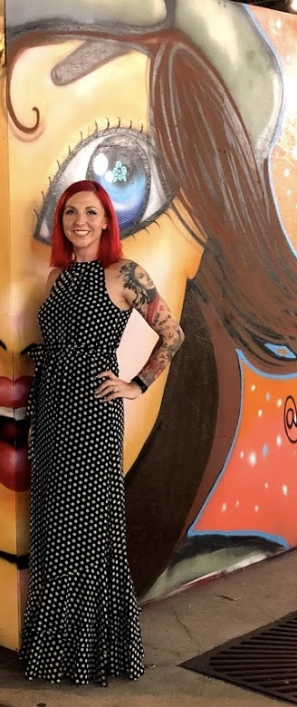

>Hello! My name is Kara Kelley. I am currently enrolled in the Learning Design and Technology Program at the University of South Florida. I earned a BS in Psychology with a minor in Criminal Justice from Troy University in 2011. I have been a virtual English teacher since 2017. In that time I have expanded my role to include working on advisory councils and as a corporate trainer, preparing incoming teachers.
Outside of school and work, I am a mother to 5 beautiful daughters and an adopted sister. I enjoy reading and playing board games with my children. I fell in love with running last year while training for a 5K so 10 races later I'm considering trying a marathon. If I'm not busy with school, work, or homeschooling, you can find me at the beach, gl-amping in a forest somewhere, or visiting Disney World. I also volunteer in a local sports league as the head coach for two recreational soccer teams.
I hope you enjoy this look into my assignments for Web Programming 1.
Home Week 0 Week 1